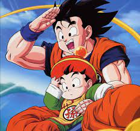

Historia del la serie

Dragon Ball Z (ドラゴンボールZ Doragon Bōru Zetto?) es una serie de manga japonesa producida por Toei Animation. Es el segundo producto de la franquicia Dragon Ball, es la secuela de la serie de anime de 1986 Dragon Ball y adapta los últimos 325 capítulos de la serie de manga Dragon Ball creada por Akira Toriyama, que se publicó en Weekly Shōnen Jump de 1988 a 1995. La serie se transmitió en Japón en Fuji TV desde abril de 1989 hasta enero de 1996 y luego fue doblada para su transmisión en al menos 81 países en todo el mundo.

La historia continúa las aventuras de Son Goku en su vida adulta mientras él y sus compañeros defienden la Tierra contra villanos, incluidos extraterrestres (Vegeta, Freezer), androides (Cell) y criaturas mágicas (Majin Buu). Al mismo tiempo es paralela a la vida de su hijo, Gohan, así como al desarrollo de sus rivales, Piccolo y Vegeta.
En total Dragon Ball Z se divide en 6 arcos: Arco de los Saiyanos. Arco de Namek y Freeza. Arco de Garlick jr. Arco de los Androides y Cell. Arco del torneo de las artes marciales del otro mundo. Arco de Majin-Boo. Ademas las quince películas basadas en Dragon Ball Z tienen tramas completamente distintas a las de la serie, ninguna de ellas se ambienta en la línea temporal en la que se desarrolla la serie original, con la excepción de La batalla de los dioses y La resurrección de Freezer. Estas dos últimas, aunque son nombradas como Dragon Ball Z, formaron los acontecimientos que se vieron en las dos primeras sagas de la serie Dragon Ball Super